The Bushfire Data Explorer is an R package designed to help users explore and communicate insights from historical Australian bushfire data. It combines datasets (a1_media, a2_bushfire) with analysis functions and an interactive Shiny dashboard to visualise long-term fire trends, temperature anomalies, and rainfall changes from 1900 to 2020.
This vignette demonstrates how to:
Load the included datasets
Summarise and visualise key variables
Launch the interactive Shiny app
The package includes two datasets:
a1_media – communication styles across articles and media types
a2_bushfire – historical bushfire metrics (Fire Weather Index, Max Temperature, Rainfall)
# Load and preview the bushfire dataset
data("a2_bushfire")
head(a2_bushfire)
#> year FWI TX7x Rain_mm
#> 1 1900 12.741917 28.52956 625.1696
#> 2 1901 9.203937 30.24970 623.3106
#> 3 1902 11.392923 29.25336 569.0539
#> 4 1903 12.265725 30.37318 635.9992
#> 5 1904 12.141870 30.07174 613.6708
#> 6 1905 11.454418 30.01133 591.1323
# Display summary statistics
summary(a2_bushfire)
#> year FWI TX7x Rain_mm
#> Min. :1900 Min. : 9.204 Min. :28.53 Min. :373.5
#> 1st Qu.:1930 1st Qu.:20.096 1st Qu.:33.66 1st Qu.:448.6
#> Median :1960 Median :30.236 Median :37.54 Median :500.8
#> Mean :1960 Mean :30.034 Mean :37.41 Mean :499.4
#> 3rd Qu.:1990 3rd Qu.:39.692 3rd Qu.:41.44 3rd Qu.:556.2
#> Max. :2020 Max. :54.404 Max. :46.00 Max. :636.0We can use ggplot2 to explore long-term changes in the Fire Weather Index (FWI):
library(ggplot2)
ggplot(a2_bushfire, aes(x = year, y = FWI)) +
geom_line(color = "#0072B2", linewidth = 1) +
geom_smooth(method = "loess", se = FALSE, color = "orange") +
theme_minimal(base_size = 13) +
labs(
title = "Fire Weather Index Trends in Australia (1900–2020)",
subtitle = "Higher values indicate increased bushfire risk",
x = "Year",
y = "Fire Weather Index (FWI)"
)
# Launch the Shiny app in your RStudio or browser
# run_app()When we run the app, you can:
Select metrics (FWI, TX7x, Rainfall)
Adjust year range using the slider
View dynamic visualisations and summary descriptions
The Bushfire Data Explorer provides a powerful and easy-to-use framework for exploring environmental and climatic patterns linked to Australian bushfires. It demonstrates how R packages can combine data, visualisation, and interactivity to support reproducible communication of complex data.